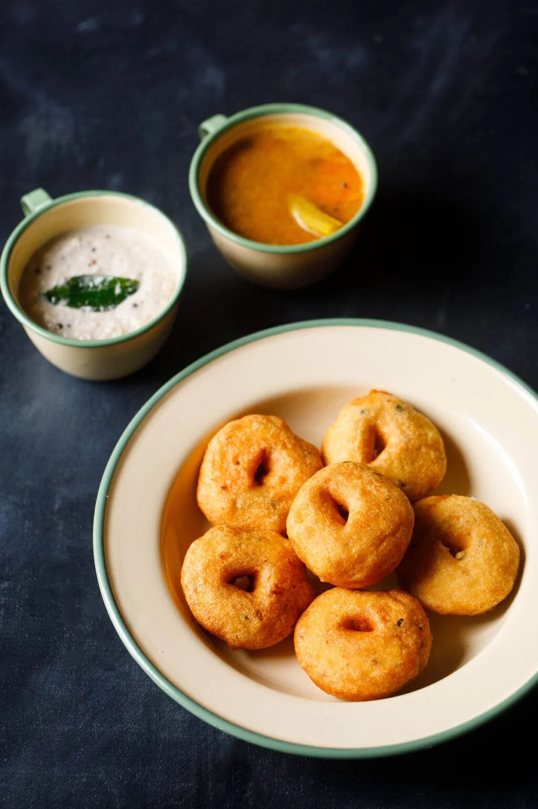
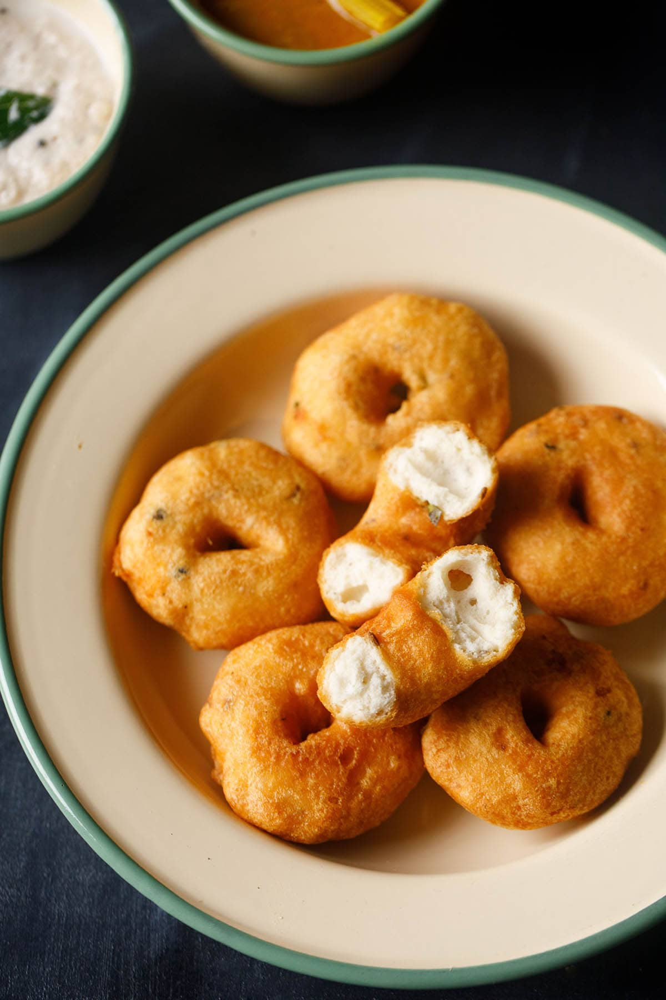
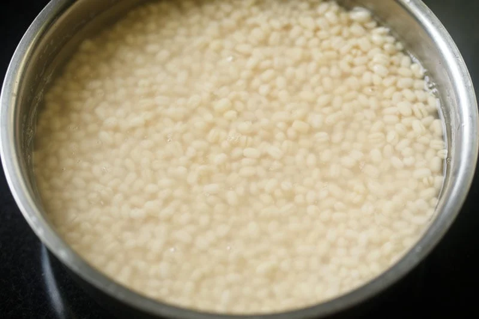
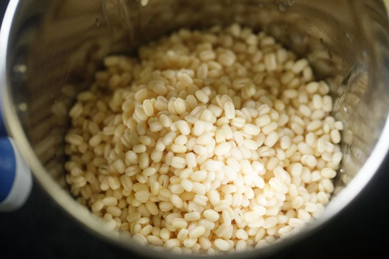
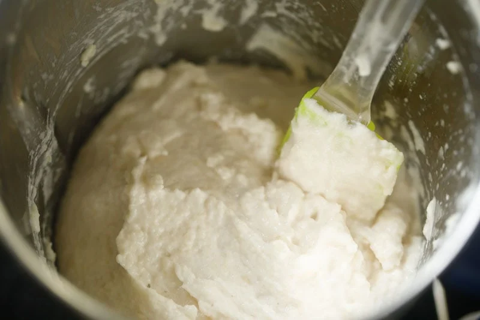
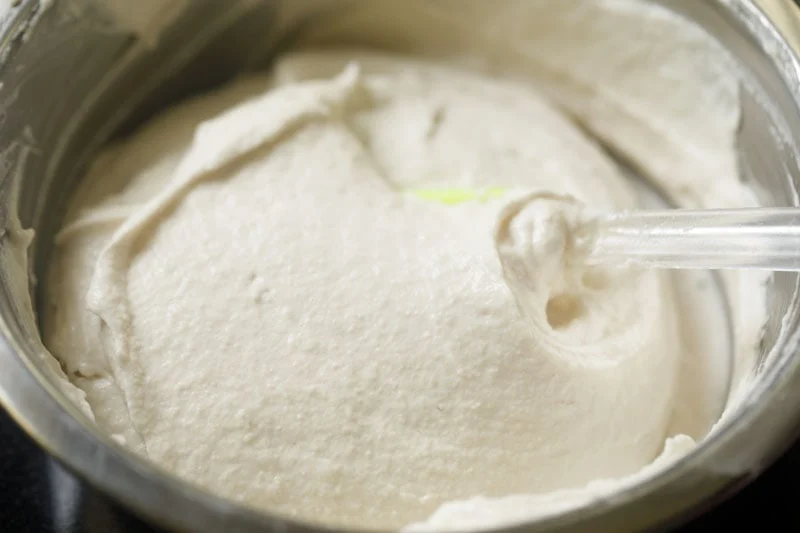
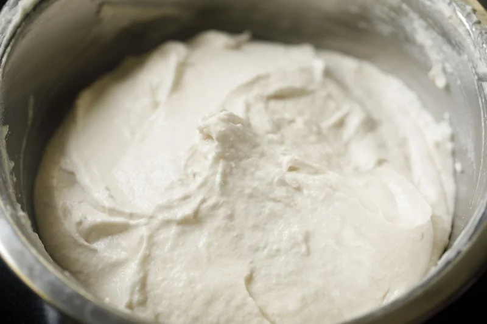
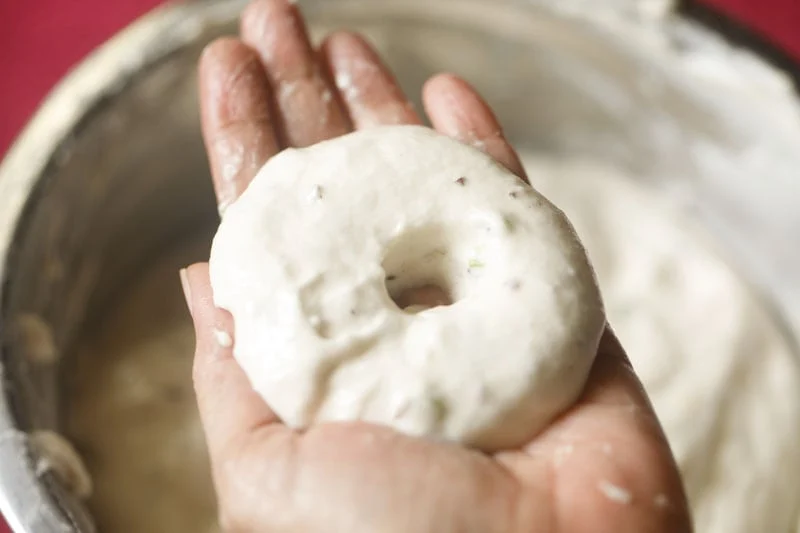
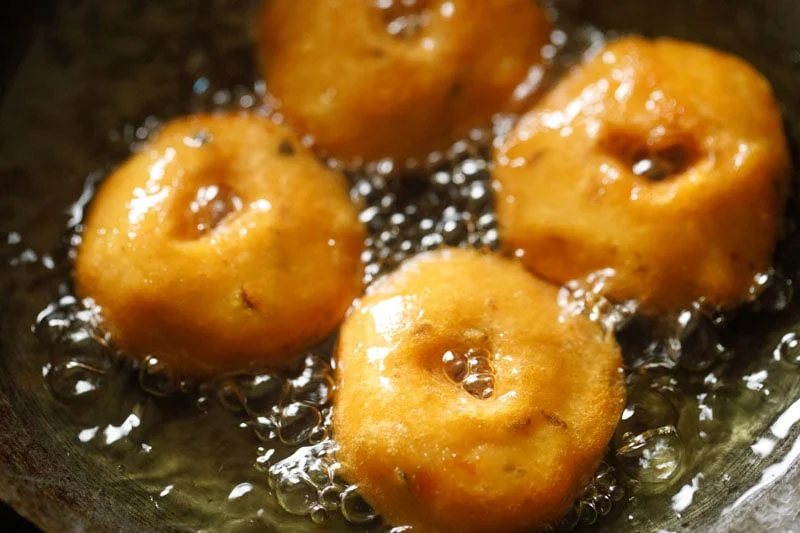
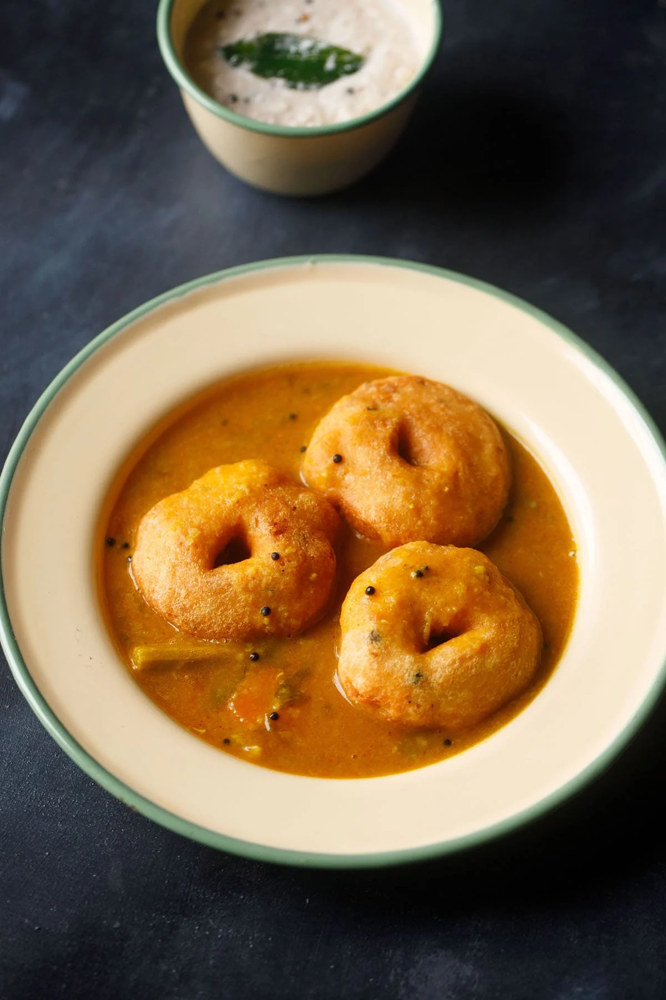

Medu Vada Recipe | Sambar Vada
Medu Vada is a popular South Indian breakfast snack of donut shaped lentil fritters that are fluffy, crispy, soft and delicious. If sweet breakfast isn’t your thing, try this recipe for savory spiced donuts made with black gram lentils, spices and herbs. Traditionally paired with Sambar and Coconut Chutney, these make for a comforting, filling and satisfying breakfast or snack.
About Vada
If you’re in India and you come across ‘vada’ or ‘bada,’ you must know that this is a category of savory snacks, which are usually fried. Largely, some different variations of these vadas can be classified as cutlets, fritters, dumplings or donuts.
A typical vada can be made using lentils or legumes, vegetables, sago or a combination of all, along with veggies, seasonings, spices and herbs that are added to enhance the taste, texture and nutritive value. Some vada versions include Dahi Vada, Sabudana Vada, Maddur Vada and more.
About Medu Vada Recipe
Medu vada is one of my favorite snacks of all time. I loved them as a kid, and they clearly withstand the test of time because they are still one of my most beloved dishes. I love most South Indian snacks because they remind me of my growing up days.
How to make Medu Vada
Soak Lentils
1. Rinse 1 cup urad dal (husked and split or whole black gram) a few times in water. Then soak the lentils in 2.5 to 3 cups water for at least 4 to 5 hours or up to overnight.
Preferably use unpolished urad dal to make this vada recipe.
2. Drain and discard the water. Add the soaked urad dal to a grinder jar. Add 3 to 4 tablespoons fresh water or as needed. Just be sure not to make the batter too thin!
Do not add too much water while grinding. The batter should be like a soft moist dough but yet light and fluffy.
It should end up looking like a cake batter rather than a crepe batter. I recommend blending in steps and adding water as needed to achieve the right consistency.
Make Urad Dal Batter
3. Begin to grind or blend the urad dal to a smooth batter. The batter should be fluffy and thick.
You can grind in two batches or one lot depending on the capacity and size of your blender or mixer-grinder.
Scrape down the sides of the blender as you go to ensure all the lentils gets blended to a uniform consistency.
4. Continue to grind at intervals by scraping the sides with a spatula. If your mixer or grinder becomes hot, then wait for a few minutes until it cools down.
5. Continue to grind or blend until you achieve a smooth, fluffy batter. Remember there should be no fine grits or chunks of urad dal in the batter.
6. Remove the batter into a big bowl or vessel. Then briskly whip with a spatula, spoon or a wired whisk for 2 to 3 minutes. This aerates the batter and gives it a light, fluffy texture.
7. In the below photo you see the vada batter that has been aerated by continuously whisking it for few minutes.
Check Batter Consistency
8. A quick way to check the perfect and right consistency of the batter is to add a small spoon of it in a bowl of water. The batter should float and remain intact. If it floats and does not get dissolved, then you have achieved the right consistency.
If it sinks, this means that your batter is not fluffy enough (with not enough air bubbles trapped in it) or is too thin.
If the batter is too thin, then add some semolina (fine rava or suji) or urad dal flour or rice flour to it to help thicken it up. Rava or suji also helps in giving a crispy texture to the vada.
Shape Batter
11. Take a bowl of water. Apply some water from the bowl on both your palms. Take some batter in your right palm from the bowl. Give it a round shape by moving it in a circular position in the right hand.
12. With your thumb make a hole in the center. You can also use banana leaves or zip lock bags to give the medu vada its doughnut shape.
Fry Medhu Vadai
13. In a kadai, heat oil over medium heat. Once the oil becomes hot, slide the medu vada gently into the hot oil. Be careful here! The oil can sputter and pop over quite a distance, so I recommend wearing an apron and long sleeves to protect your skin and clothes.
14. Once the vada or garelu are slightly golden and the batter has firmed up and looks crispy, then gently turn over with a slotted spoon and continue to fry.
The oil should not exceed 190 degrees celsius (375F), or fall below 175 degrees celsius (350F).
15. Continue to fry the vada, turning over as needed.
16. Fry the medhu vadai till crisp and golden.
17. Once the medhu vadai is crisp and golden, then remove with a slotted spoon to drain the extra oil. Fry the rest of vadai in the same manner.
18. Drain them on kitchen tissues to remove extra oil. This way shape the vada batter and fry them in hot oil.
19. Serve Medu Vada or Garelu or Uzhunnu Vada hot or warm with sambar and coconut chutney. Enjoy!
